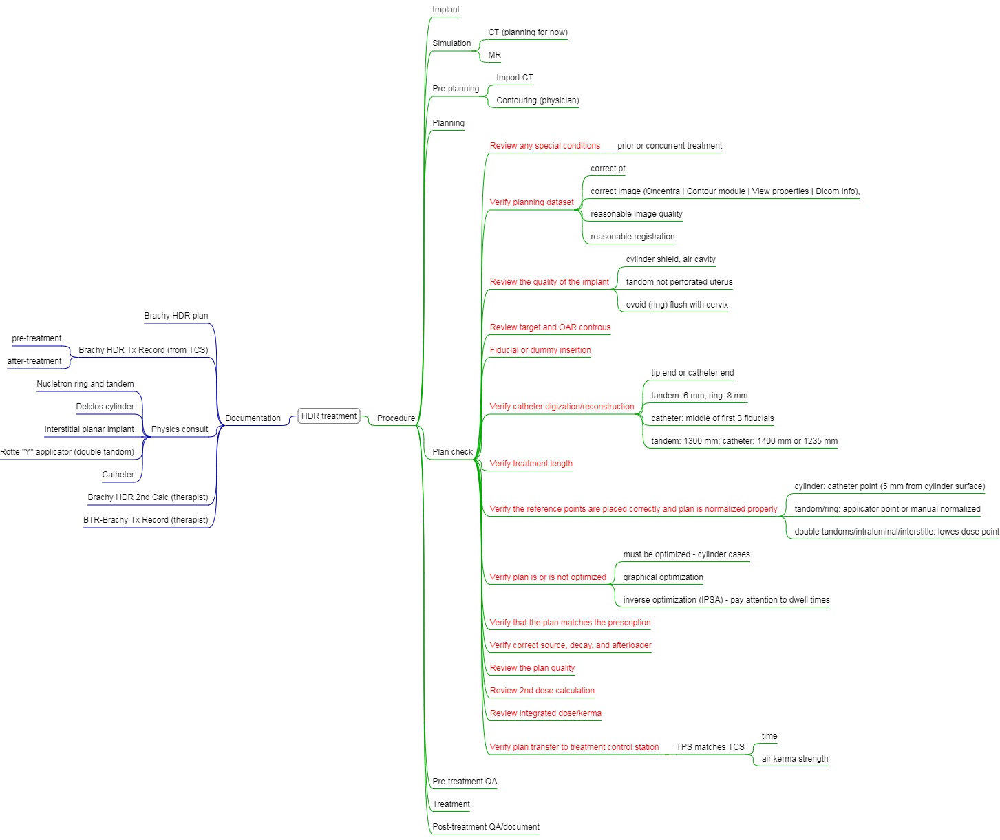

Chapter 23 HDR
- Perceive and Believe
- Stay Calm
- Think, plan, and analyze
- Take decisive action
- Celebrate success
23.1 HDR vs. LDR
LDR: well-established treatment; standard doses, plan, and treatmetn time
HDR: Outpatient treatment, short administration time, minimal staff exposure, standard source strength, and dose optimization[@stewart_current_2006]
Up to date, commmon indications in practice are include:
- GYN (cervical [@liu_high_2014; @wang_high_2010], uterine, vaginal, vulvar)
- Prostate (monotherapy or boost)
- Breast (accelerated partial breast irradiation)
- possible Sarcoma, skin, esophagus, and bile duct
In recent review paper, authors [@liu_high_2014] showed that there is no difference in OS, DSS, LC, nodal occurrence, distance occurrence was found between LDR and HDR (from a meta-analysis of 4 clinical trials in Cochrane database with a total of 1265 patients with advanced cervical cancer), but HDR is more convenient and accurate.29
23.2 HDR-QA
What am I testing and why am I testing it?
— Susan Richardson 2017 AAPM talk
23.2.1 Daily (device) QA
According 10 CFR35.643 “Periodic spot-checks for remote afterloader units”", the following tests are required:
- Electrical interlocks at entrance to room.
- Source exposure indicator lights on the after loader, control console, and in the facility.
- Viewing and intercom systems.
- Emergency response equipment.
- Radiation monitors to indicate source position (\(\pm1\) mm) -
this test does not gurantee you the correct treatmetn position in the patient (e.g vaginal cylinder slid out 2 cm between imaging and treatment). - Timer accuracy (\(\pm1\) s).
- Clock (date and time) in unit’s computer.
- Decayed source activity in unit’s computer.
The autheried medical physicist (AMP) should review the daily QA within 15 days. The APM shall notify the licensee as soon as possible in writing of the results of each spot-check.
23.2.2 Pretreatment QA (TG-59)
- Two people (therapists?) should check proper connection of catheters to the HDR unit and that the transfer tubes are free of kinks.
- The emergency kit and source container are available.
- Survey meter and/or GM-counter is present and operational. -
The patient may have had a nuclear medicine scan prior to the treatment, causing an elevated reading. thus a **pre-treatment survey** is conducted though not listed in TG-59. - The length of transfer tube and applicator (catheters) are correct.
- Check applicator positioning. How do physicians check this item without image verification?
- Treatment documentation review.
- Signed prescription and plan.
- Second check has been performed. (use emipircal values)
- Plan agrees with prescription.
- Plan is consistent with previous fractions if applicable.
- Dwell positions and times in plan agree with what is programmed on the treatment console.
- Patient identity confirmed by two methods.
At current practice, a check-list is used by physicists for pretrement plan QA and a time-out is conducted prior to initiating the treatment.
23.2.3 Source change
The half-life time is about 74 days, so the old source is sawpped with a new source about every 3 months. The appranet activity of the new source is normally about 10 Ci. According to Eq. (15.1) and Eq. (15.2), the source strength is equal to 41100 U (\(S_k = 10,000\ (mCi) \times 4.69 \left(\frac{{R\cdot cm}^2}{mCi\cdot hr} \right) \times 0.876 \left(\frac{cGy}{R}\right)\)). This quantity will be verified by an AMP using NIST tracable well chamber and electrometer, and then enterred in the treatment planning system for dose calculation. The engineering from HDR afterloader vendor also verifies the source using their own equipment.
- Verify the source cable positioning accuracy at two different programmed positions (1205 mm and 1400 mm) before the vendor engineering leaves (using GYN transfer tube).
- Although the re-entrant 30 well chamber and electrometer is still within 2-year calibration period, we always do consistence check using a NIST-traceble Cs-137 source (we actually checked with 2 Cs-137 sources provided by our RSO).
- Switch a physics QA transfer tube and insert a catheter into Ir-192 insert.
- Measure in the current mode at 5 positions (1195 mm, 1200 mm, 1205 mm, 1210 mm, and 1215 mm), and use the average to calculate Sk: \[S_k=I_{ave}\times C_{T,P} \times N_C \times A_{ion} \times P_{ion}\] where Nel and NC are electrometer and chamber calibration factor, Aion is the ion recombination factor at the time of chamber calibration, and Pion is the ion recombination factor at the time of source calibration.
- Check time-dose linearity
- Check stopwatch accuracy (100 s)
- Check transfer tube connection error
- Switch emergency power switch
Why is the difference between Aion and Pion?
confused
23.2.4 Medical Events
- Errors on NRC website
- Wisconsin The purpose of reporting a medical event is to improve patients’ safety. 2017 AAPM Annual Meeting An Interactive Safety Session for New Brachytherapy Practitioners
23.3 Sources
A comprehensive seed data source can be found from a database provided by Carleton University
Because Ir-192 has much higher special activity31 than most other isotopes, it is now the mostly used radio-isotope for HDR treatment. The higher the special activity means that the Ir-192 can be made with small physial dimension but still provide high radioactivity.
Recently, Co-60 has been used as the HDR sources.[@nath_guidelines_2016]
23.4 Treatment sites
The treatment guidelines can be found at American Brachytherapy Society (ABS) website.
23.4.1 Cervical cancer
The ABS recommends the use of brachytherapy as a component (after EBRT) of the definitive treatment of locally advanced cervical carcinoma. [@viswanathan_american_2012, @viswanathan_american_2012-1]
Based on the talk by J. Schwarz, treating cervial cancer has progressed
- 1903 Stockholm and Paris
- 1938 Manchester – point A
- 1953 Point A revision
- 1985 ICRU 38
- 1987 more point A updates
- 2000 GEC-ESTRO
- D90, D100 for dose prescription
- D2cc bladder, rectum, and sigmoid
- 2004 GTV and CTV delineation (MRI)
- 2005 GEC-ESTRO recommendation for IGRT brachytherapy
- …
Why is MRI preferred to CT for target delineation?
MRI has been soft tissue contrast; MRI has better overlap with FPG-PET volumes. (?more clinical importance); Improved overall survivial for large tumours (>5 cm), 28% versus 58% (p = 0.003), when the target is drawn on MRI.[@potter_clinical_2007]
Idea: availability of commercial dummy sources for MRI is limited.
What are the targets in MR-based HDR?
Targets include gross tumor volume (diagnosis) (GTVD), gross tumor volume (brachy) (GTVB1, GTVB2, …), high risk CTV (HR CTVB1, HR CTVB2, …), and intermediate risk CTV (IR CTVB1, IR CTVB2, …). The IR CTV include the microscopic disease, IR CTV = HR CTV + 5-15 mm margin. The details about target delineation and dose can be found in the recommendations from GEC-ESTRO Working Group
The choice of MR sequence is essential for optimal visualisation of the applicator (plastic or titanium):[@dimopoulos_recommendations_2012; @haack_applicator_2009]
- Plastic has weak signal on T2; use of markers
- Titanium has (induced) susceptibility artifact, and thus more distortions for higher magnetic strength; worse on T2; T1 is more suitable (? Why Titanium is MR compatible? )
- If an applicator has been shown to be MR conditional for a 1.5T MRI, then it does not mean that it can be safely used in a 3T system without the need for further testing. CT still provides best imaging for applicator in terms of spatial accuracy (1 mm on CT vs. 1-2 mm on MRI for the localization of first dwell position) and artifacts.
23.4.2 Endometrial cancer
Endometrial cancer is the most common gynecological cancer in the United States.
Operable endometrial cancer
- Standard care after surgery (hysterectomy): HDR vaginal cuff brachytherapy with or without external beam radiation therapy,
- Applicator: single channel segmented or multi-channel cylinder (2.5, 3.0, 3.5, and 4 cm in diameter)
- the largest diameter cylinder that patient can tolerate is used to minimize the air gap between cylinder and vagina and to avoid rapid dose fall-off.
- Dose fractionation: 7 Gy \(\times\) 3
- Treatment length: 5 cm (11 dwell points with 5 mm spacing)
- Dose normalization: catheter points created from the dwell points and 5 mm away from (or on) cylinder surface; (Are we treating vaginal cuff or the whole vigina?)
- Optimization: at catheter ponts
- Reference: ABS consensus guidelines for adjuvant vaginal cuff brachytherapy after hysterectomy
Inoeprable endometrial cancer
- HDR brachytherapy with or without external beam radiation therapy
- Target: the entire uterus, cervix, and upper 3-5 cm of vagina
- Applicator: tandem + cylinder, double-tandem, …
- Dose fractionation: varied
- Treatment length: varied
- Dose normalization:
- Optimization: No
- Reference: Consensus statement for brachytherapy for the treatment of medically inoperable endometrial cancer
Optimization and prescription were performed by the planning software to make the average of the optimization points equal to the prescription and to minimize the standard deviation of the points compared with the average.
23.4.3 Breast
ABS acceptability criteria for APBI
- Age: \(\ge\) 50 year old
- Size: \(\le\) 3 cm
- Histology: All invasive subtypes and DCIS
- Estrogen receptor: +/-
- Surgical margin: -
- Lymphovasucular space invasion: not present
- Nodal status: -
Treatment planning
- 34 Gy in 10 fractions twice daily
- PTVEval + D90% >= 90% + V150 < 50 cm3 + V200 < 10 cm3 + Skin dose < 145% of prescription
They are slightly different from ASTRO Consensus Statement 2009.
23.4.4 Prostate
ABS consensus guidelines for high-dose-rate prostate brachytherapy
Monotherapy: 13.5 Gy \(\times\) 2 fractions (NCCN)
23.5 Oncentra planning
The workflow for the latest Oncentra planning system looks like
Figure 23.1: Oncentra workflow (from Elekta online document)
The overall planning and QA mindmap

23.6 Saftey and shielding design
Typical room ~ 60 cm concret
Q3 TG43U d)
Using Eq. @ref(eq.tg43) or TG-43U1 2D Brachytherapy dosimetry formalism,
\[\begin{equation} \begin{aligned} \dot D(r, \theta) &= \Lambda\cdot S_k \frac{G_L(r, \theta)}{G_L(r=1cm,\theta=90^o)} \cdot g_L(r, \theta)\cdot F(r,\theta)\\ &=1.12\ cGy/(h\cdot U)\cdot4.11\times10^4\text{U}\cdot1.023\cdot1\\ &=\boxed{13.1\ cGy/s} \end{aligned} \end{equation}\]
The half-life time of Ir-192 is about 74 days, so activity after 90 days (Eq. ((??))) is \[\begin{equation*} A_2 = A_02^{-t/T_{1/2}}=A_02^{-90/74}=0.43A_1 \end{equation*}\]
To maintain the prescribed dose (\(\dot D_1 \Delta t_1 = \dot D_2 \Delta t_2\) and \(A \propto \dot D\), the dwell time \(\Delta t_2\) will be
\[\begin{equation*} {\Delta t_2 = \frac{\dot D_1}{\dot D_2} \Delta t_1 = \frac{\dot A_1}{\dot A_2} \Delta t_1 = \frac{1}{0.43}\times 16 \text{ min} \ \times 80\% = \boxed{29.7 \text{ min}}} \end{equation*}\] The total treatment time will be \(29.7 + 16\times20\%=\boxed{33\ \text{minutes}}\).
23.7 Solutions
Q1 c)
Q2 a)
Q3 d)
Q4 Afterloader QA a)
Q5 Shiedling b)
Q6 Impact of decay on treatment timee
Q7 c)
Q8 c)
Q9 b)
Q10 a) but esophagus cancer is also treated with HDR but with less indication
Q11 b)
Q12 d)
Excerpt “Theoretically, HDR has a lower therapeutic ratio than LDR because of the short duration of the treatments.”" - Practical Radiation Oncology Physics, [@dieterich_practical_2016] Chapter “Intracavitary Brachytherapy”↩
The nuclear medicine well chamber (“dose calibrator”), commonly used for routine calibration of LDR sources, is not suitable for HDR source calibration due to its high sensitivity (large volume).↩
The special activity (SA) is defined as the activity per mass. It depends on half lifetime and atomic number, \(SA \propto \frac{1}{T_{1/2}\cdot A}\). For example, \(\frac{SA_{Co}}{SA_{Ir}} = \frac{74\ days \times 192}{5\ years \times 60} \approx 0.13\). Wait a second, how about SA of I-125? Although I-125 can have higher SA than Ir-192, the energy of I-125 is just too low for enough tissue penetration.↩